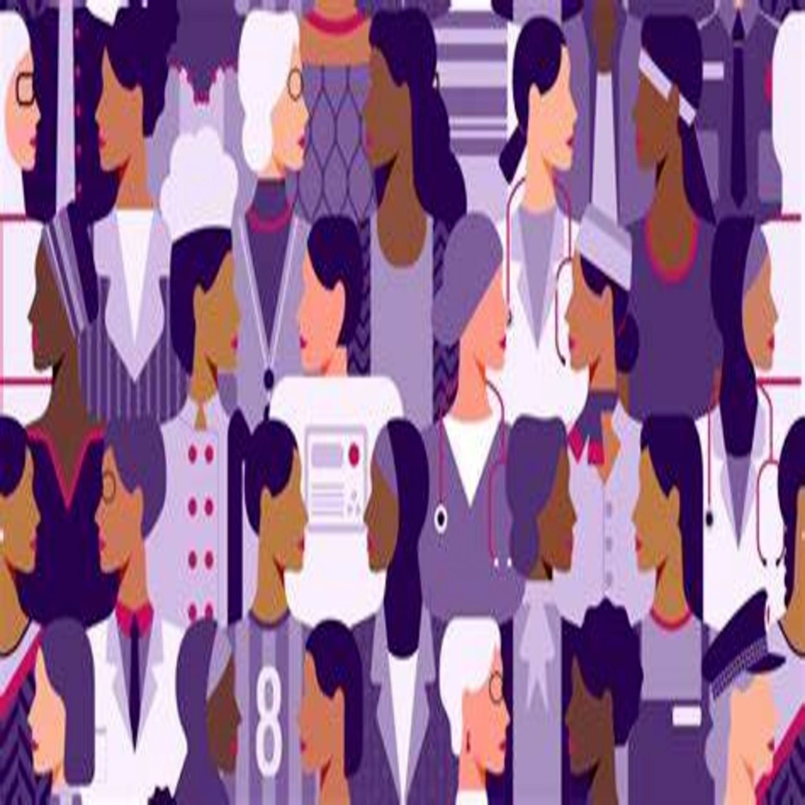

Taking a step forward, Time to open up
Menstrual blood is the only blood not induced from violence yet it remains the only one that disgusts the society? With a steel soul during these days and though the smell changes with the blood colour They still smell like a girl.
It refers to the lack of access to sanitation facilities, menstrual products because of financial burden due to the high cost of sanitation and hygiene.

Say it due to finincial burden or inadequate education , girls in the rural areas resort to unhealthy options during their periods.
Because of the stigmas most of the girls will not have information to follow , Normalizing open conversatrions will help and creat awarness about the different feminine hygiene products available.